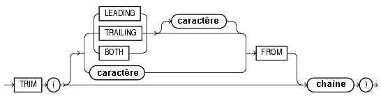

Oracle PL/SQL
Date de publication : Avril 2004 ,
Date de mise a jour : Juillet 2004
3. Les fonctions natives
3.1. Les fonctions chaînes de caractères
3.2. Les fonctions arithmétiques
3.3. Les fonctions de conversion et de transformation
3.4. Les fonctions sur les dates
3. Les fonctions natives
Ces fonctions SQL ne sont pas propres au PL/SQL et ne sont donc pas développées outre mesure dans ce chapitre,
notamment au niveau des formats et littéraux utilisables.
Reportez-vous à la documentation SQL pour davantage de précisions
3.1. Les fonctions chaînes de caractères
2 syntaxes :
chaîne || chaîne
CONCAT( chaîne, chaîne )
- Remplissage à gauche ou à droite d'une chaîne
Ces fonctions formatent une chaîne sur une longueur donnée par ajout de caractères avant (LPAD) ou après (RPAD) la chaîne passée en argument
LPAD( chaîne, longueur [, 'caractères'] )
RPAD( chaîne, longueur [, 'caractères'] )
chaîne représente le nom d'une colonne, d'une variable ou un littéral
longueur représente le nombre total de caractères du résultat
caractères représente le ou les caractères de remplissage
RPAD( 'Total', 20, '.' )
Total...............
LPAD( 'Hello', 20, '.' )
...............Hello
RPAD( LPAD( '2320 euros', 20, '*' ), 30, '*' )
**********2320 euros**********
LPAD( 'Hello', 20, '-*-' )
-*
Si caractères n'est pas spécifié, le caractère par défaut est l'espace (CHR(32))
- Suppression de caractères à gauche (LTRIM) ou à droite (RTRIM) d'une chaîne
LTRIM( chaîne [, 'caractères'] )
RTRIM( chaîne [, 'caractères'] )
LTRIM( '"Libellé', '"' )
Libellé
RTRIM( 'Libellé
Libellé
LTRIM( RTRIM( '"Libellé"', '"' ), '"' )
Libellé
si caractères n'est pas spécifié, le caractère par défaut est l'espace (CHR(32))
RTRIM( '(Libellé ') || ')'
(Libellé)
TRIM

Cette fonction permet de cumuler les possibilités de LTRIM et RTRIM
chaîne représente la chaîne de caractères en entrée de la fonction
si LEADING est spécifié, tous les premiers caractères identiques à caractère sont supprimés
si TRAILING est spécifié, tous les derniers caractères identiques à caractère sont supprimés
si BOTH ou rien est spécifié, tous les premiers et derniers caractères identiques à caractère sont supprimés
si caractère n'est pas spécifié la valeur par défaut est l'espace
si seule chaîne est spécifiée tous les espaces en début et fin de chaîne sont supprimés
si caractère ou chaîne est NULL, la fonction retourne NULL
SQL> Declare
2 LC$Ch1 Varchar(20) := ' libellé ' ;
3 LC$Ch2 Varchar(20) := '***libellé***' ;
4 Begin
5 dbms_output.put_line( TRIM( LC$Ch1 ) ) ;
6 dbms_output.put_line( TRIM( '*' FROM LC$Ch2 ) ) ;
7 End ;
8 /
libellé
libellé
Procédure PL/SQL terminée avec succès.
- Modification de la casse d'une chaîne
LOWER( chaîne )
NLS_LOWER( chaîne [, nls_paramètre ] )
UPPER( chaîne )
NLS_UPPER( chaîne [, nls_paramètre ] )
INITCAP( chaîne )
NLS_INITCAP( chaîne [, nls_paramètre ] )
LOWER( 'ORACLE' )
oracle
UPPER( 'oracle' )
ORACLE
INITCAP( 'le sgbd oracle' )
Le Sgbd Oracle
- Indication de la longueur d'une chaîne en caractères (LENGTH) ou en octets (LENGTHB)
LENGTH( chaîne )
LENGTH( 'le sgbd oracle' )
14
- Extraction d'une sous-chaîne à partir d'une chaîne
SUBSTR( chaîne, début [, 'nombre'] )
chaîne représente le nom d'une colonne, d'une variable ou un littéral
début représente la position de départ de recherche dans la chaîne
nombre représente le nombre de caractères à extraire
SUBSTR( 'le sgbd oracle', 4, 4 )
sgbd
si nombre est omis, la fonction ramène tous les caractères à partir de la position début
SUBSTR( 'le sgbd oracle', 4 )
sgbd oracle
si nombre est négatif l'extraction débute à partir de la fin de la chaîne
SUBSTR( 'le sgbd oracle', -6 )
oracle
- Recherche de la position d'une sous-chaîne dans une chaîne
INSTR( chaîne, sous-chaîne [, début [,nombre occurrences] ] )
INSTRB( chaîne, sous-chaîne [, début [,nombre occurrences] ] )
chaîne représente le nom d'une colonne, d'une variable ou un littéral passé en argument
sous-chaîne représente le nom d'une variable ou un littéral dont on cherche la position
début (optionnel) représente la position de départ de la recherche dans chaîne
nombre occurrences (si début renseigné) représente le nombre d'occurrences trouvées à ignorer
Lorsque sous-chaîne représente plusieurs caractères, la fonction retourne la position du premier caractère de la sous-chaîne
recherche de la première position de la sous-chaîne oracle
INSTR( 'le sgbd oracle', 'oracle' )
9
recherche de la deuxième position de la sous-chaîne oracle
INSTR( 'le sgbd oracle d''oracle corporation', 'oracle', 1, 2 )
18
si la sous-chaîne n'est pas trouvée, la fonction retourne 0
INSTR( 'le sgbd oracle d''oracle corporation', 'texte', 1, 2 )
0
- Remplacement des caractères d'une chaîne par une sous-chaîne
REPLACE( chaîne, chaîne source, chaîne cible )
chaîne représente le nom d'une colonne, d'une variable ou un littéral passé en argument
chaîne source représente le nom d'une variable ou un littéral de recherche
chaîne cible représente le nom d'une variable ou un littéral de remplacement
REPLACE( 'banjaur', 'a', 'o' )
bonjour
Elimination de caractères
REPLACE( '"champs1","champs2"', '"', '' )
champs1,champs2
- Remplacement caractère par caractère dans une chaîne
TRANSLATE( chaîne, chaîne source, chaîne cible )
chaîne représente le nom d'une colonne, d'une variable ou un littéral passé en argument
chaîne source représente le nom d'une variable ou un littéral de recherche
chaîne cible représente le nom d'une variable ou un littéral de remplacement
Chaque caractère présent dans chaîne qui est également présent dans chaîne source est remplacé
par le caractère qui occupe la même position dans chaîne cible
TRANSLATE( 'Pas d''accents : éèàùôö', 'éèàùôö', 'eeauoo' )
Pas d'accents : eeauoo
Dans l'exemple suivant, le caractère _ est remplacé par _ et tous les autres (interdit sous Unix)
sont également remplacés par _
TRANSLATE( 'Nom*de[fichier<unix>', '_ /\<>|(){}[]*&"''$;','___________________' )
Nom_de_fichier_unix_
Elimination de caractères indésirables
TRANSLATE( 'Nom+de|fichier!unix', 'A+|!', 'A' )
Nomdefichierunix
Le premier caractère A de la chaîne source est un leurre qui indique à la fonction de remplacer
toutes les occurrences de A par A et de remplacer les autres caractères (+|!) par rien.
3.2. Les fonctions arithmétiques
ABS( valeur )
Valeur absolue d'un nombre
ABS( 200 ) = 200
ABS( -200 ) = 200
CEIL( valeur)
Entier supérieur ou égal à valeur
CEIL( 5 ) = 5
CEIL( 5.1 ) = 6
CEIL( -5 ) = -5
CEIL( -5.1 ) = -5
CEIL( -5.9 ) = -5
FLOOR( valeur )
Entier inférieur ou égal à valeur
FLOOR( 5 ) = 5
FLOOR( 5.1 ) = 5
FLOOR( -5 ) = -5
FLOOR( -5.1 ) = -6
FLOOR( -5.9 ) = -6
MOD( valeur, diviseur )
Reste d'une division
MOD( 10, 2 ) = 0
MOD( 10, 3 ) = 1
MOD( 10, .6 ) = 0.4
MOD( -10, 2 ) = 0
MOD( -10, .6 ) = -0.4
Lorsque diviseur est supérieur à valeur, la fonction retourne la valeur
MOD( 5, 12 ) = 5
Si valeur est un entier alors MOD( valeur, 1 ) = 0
(idéal pour tester que valeur est entier)
Si valeur est un entier pair alors MOD( valeur, 2 ) = 0
POWER( valeur, exposant )
Elévation d'un nombre à une puissance
POWER( 8, 2 ) = 64
POWER( 8, -2 ) = 0.015625
SQRT( valeur )
Racine carrée d'un nombre
SQRT( 64 ) = 8
EXP( valeur )
e (2,71828182845905) élevé à une puissance
EXP( 5 ) = 148.413159102577
LN( valeur )
Logarithme naturel, ou base e, d'une valeur
LN(148.413159102577 ) = 5
LOG( base, valeur )
Logarithme d'une valeur
LOG( 10, 2 ) = 0.301029995663981
LN( valeur ) est identique à LOG(2,71828182845905 (EXP( 1 ) ), valeur )
ROUND( valeur, précision )
Arrondi d'une valeur à un certain nombre de chiffres de précision
ROUND( 9.254, 1 )
9,3
ROUND( 9.259, 2 )
9,26
ROUND( 9.258, 0 )
9
ROUND( 9.9, 0 )
10
ROUND( 99.259, -1 )
100
TRUNC( valeur, précision )
Suppression d'une partie des chiffres de précision décimale
TRUNC( 9.259, 2 )
9,25
TRUNC( 9.9, 0 )
9
TRUNC( 99.259, -1 )
90
une précision négative est intéressante pour arrondir des nombres sur des tranches de milliers, millions, milliards, etc.
SIGN( valeur )
Signe d'une valeur
SIGN( 12 )
1
SIGN( -12 )
-1
SIN( valeur ), COS( valeur ), TAN( valeur )
Renvoie la valeur trigonométrique d'un angle exprimé en radians
SINH( valeur ), COSH( valeur ), TANH( valeur )
Renvoie la valeur trigonométrique hyperbolique d'un angle exprimée en radians
ASIN( valeur ), ACOS( valeur ), ATAN( valeur )
Renvoie respectivement l'arc sinus, cosinus et tangente en radians
Ces fonctions portent sur des groupes de lignes et sont utilisées dans les ordres select
(Bien sûr rien n'empêche de coder : AVG(40), mais cela n'a pas beaucoup de sens)
AVG( colonne )
Valeur moyenne des valeurs de colonne
(les valeurs NULL ne sont pas prises en compte)
select AVG( SAL ) from EMP
AVG(SAL)
----------
2073,21429
COUNT( colonne )
Nombre de valeurs de colonne (les valeurs NULL ne sont pas prises en compte)
select COUNT( ENAME ) from EMP;
COUNT(ENAME)
------------
14
MAX( colonne )
Valeur maximum des valeurs de colonne
select ENAME, SAL from emp where SAL = (select MAX( SAL) From EMP );
ENAME SAL
---------- ----------
KING 5000
MIN( colonne )
Valeur minimum des valeurs de colonne
Select MIN( SAL ) From EMP
SUM( colonne )
Somme des valeurs de colonne
Select SUM( SAL ) From EMP
Ces fonctions portent sur un ensemble de colonnes d'une seule ligne
Elles peuvent être utilisées avec de nombreuses valeurs qui peuvent apparaître sous forme de colonnes, de littéraux, de calculs ou de combinaison d'autres colonnes.
GREATEST( valeur1, valeur2, valeur3,… )
Valeur la plus grande de la liste
GREATEST( 1, 5, 15, 8 )
15
GREATEST( 'Elmer', 'Achille','Richard', 'Josianne' )
Richard
GREATEST( Length('Elmer'), Length('Achille'),Length('Richard'), Length('Josianne') )
8
LEAST( valeur1, valeur2, valeur3,… )
Valeur la plus petite de la liste
LEAST( 1, 5, 15, 8 )
1
LEAST( 3, 5+5, 8, 12-6 )
3
3.3. Les fonctions de conversion et de transformation
BIN_TO_NUM( bit [,bit[...]] )
Conversion d'une suite de bits en nombre
SQL> SELECT BIN_TO_NUM(1,0,0,0,0,0,0,0,0,0,0,0,0) FROM DUAL ;
BIN_TO_NUM(1,0,0,0,0,0,0,0,0,0,0,0,0)
4096
SQL>
BITAND( arg1, arg2 )
Applique un ET logique sur les deux arguments
SELECT order_id, customer_id,
DECODE(BITAND(order_status, 1), 1, 'Warehouse', 'PostOffice') Location,
DECODE(BITAND(order_status, 2), 2, 'Ground', 'Air') Method,
DECODE(BITAND(order_status, 4), 4, 'Insured', 'Certified') Receipt
FROM orders
WHERE order_status < 8;
ORDER_ID CUSTOMER_ID LOCATION MET RECEIPT
2458 101 Postoffice Air Certified
2397 102 Warehouse Air Certified
2454 103 Warehouse Air Certified
2354 104 Postoffice Air Certified
2358 105 Postoffice G Certified
2440 107 Warehouse G Certified
2357 108 Warehouse Air Insured
2435 144 Postoffice G Insured
...
CHARTOROWID( char )
Conversion d'une chaîne en ROWID
CONVERT( chaîne, jeu caract source, jeu caract cible )
Conversion d'une chaîne d'un jeu de caractères à un autre
select CONVERT('Ä Ê Í Õ Ø A B C D E ', 'US7ASCII', 'WE8ISO8859P1') from dual ;
CONVERT('ÄÊÍÕØABCDE'
A E I ? ? A B C D E
DECODE( valeur, si1, alors1, si2, alors2,….., sinon )
Substitution valeur par valeur
select SAL, DECODE( TRUNC( SAL, -3 ), 0, 'Bof', 1000, 'Mieux', 2000, 'Pas mal', 'Super' ) from emp ;
SAL DECODE(
800 Bof
1600 Mieux
1250 Mieux
2975 Pas mal
1250 Mieux
2850 Pas mal
2450 Pas mal
3000 Super
5000 Super
1500 Mieux
1100 Mieux
950 Bof
3000 Super
1300 Mieux
BIN_TO_NUM( bit [,bit[...]] )
Conversion d'une suite de bits en nombre
SQL> SELECT BIN_TO_NUM(1,0,0,0,0,0,0,0,0,0,0,0,0) FROM DUAL ;
BIN_TO_NUM(1,0,0,0,0,0,0,0,0,0,0,0,0)
4096
SQL>
DUMP( expr [,format_retour [,début [,longueur]]] )
Retourne le type interne, longueur en octets de l'expression passée en argument
format_retour peut prendre l'une des quatre valeurs suivantes :
- 8 octal
- 10 décimal
- 16 héxadécimal
- 17 caractères
On peut ajouter 1000 à l'argument format_retour pour forcer DUMP à afficher le jeu de caractères en cours
SQL>
SQL> SELECT DUMP('Hello', 8) "Octal",
2 DUMP('Hello', 10) "Décimal",
3 DUMP('Hello', 16) "Hexadécimal",
4 DUMP('Hello', 17) "Caractère"
5 FROM DUAL ;
Octal Décimal Hexadécimal Caractère
Typ=96 Len=5: 110,145,154,154,157 Typ=96 Len=5: 72,101,108,108,111 Typ=96 Len=5: 48,65,6c,6c,6f Typ=96 Len=5: H,e,l,l,o
SQL>
SELECT DUMP('abc', 1016)
FROM DUAL;
DUMP('ABC',1016)
Typ=96 Len=3 CharacterSet=WE8DEC: 61,62,63
SQL>
HEXTORAW( char )
Conversion d'un nombre hexadécimal en un nombre binaire
RAWTOHEX( raw )
Conversion d'un nombre binaire en nombre hexadécimal
ROWIDTOCHAR( rowid )
Conversion d'un ROWID en chaîne
select ROWIDTOCHAR( ROWID ) from emp ;
ROWIDTOCHAR(ROWID)
AAAHW7AABAAAMUiAAA
AAAHW7AABAAAMUiAAB
AAAHW7AABAAAMUiAAC
AAAHW7AABAAAMUiAAD
AAAHW7AABAAAMUiAAE
AAAHW7AABAAAMUiAAF
TO_CHAR( date [, 'format' ] )
TO_CHAR( nombre [, 'format' ] )
Transformation d'un type DATE ou NUMBER en chaîne
select TO_CHAR( SYSDATE, 'DD/MM/YYYY HH24:MI:SS' ) from dual ;
TO_CHAR(SYSDATE,'DD
31/01/2004 19:30:56
select TO_CHAR( 1256.35, '999G999D000' ) from dual ;
TO_CHAR(1256
1.256,350
TO_DATE( nombre [, 'format' ] )
TO_DATE( chaîne [, 'format' ] )
Transformation d'un type NUMBER ou CHAR ou VARCHAR2 en date
select TO_DATE( '01/01/04', 'DD/MM/RR' ) from dual ;
TO_DATE('01/01/04',
01/01/2004 00:00:00
Select TO_DATE( 2453036, 'J' ) from dual ;
TO_DATE(2453036,'J'
31/01/2004 00:00:00
TO_DSINTERVAL( chaîne )(9i)
Transformation d'un type CHAR ou VARCHAR2 en INTERVAL DAY TO SECOND
TO_LOB( LONG )
TO_LOB( LONG RAW )
Conversion d'une valeur de type LONG ou LONG RAW en valeur de type LOB
TO_CLOB( char )
TO_CLOB( colonne lob )
Conversion d'une valeur de type CHAR ou LOB en valeur de type CLOB
TO_MULTI_BYTE
Conversion d'une chaîne de caractères mono-octet en chaîne de caractères multi-octets
Cette fonction n'est nécessaire que si votre jeu de caractères contient à la fois des caractères mono-octets et des caractères multi-octets
TO_NUMBER( chaîne [, 'format' ] )
Transformation d'un type CHAR ou VARCHAR2 en nombre
select TO_NUMBER( '25,8', '9G999D00' ) from dual ;
TO_NUMBER('25,8','9G999D00')
25,8
TO_SINGLE_BYTE
Conversion d'une chaîne de caractères multi-octets en chaîne de caractères mono-octet
Cette fonction n'est nécessaire que si votre jeu de caractères contient à la fois des caractères mono-octets et des caractères multi-octets
TO_TIMESTAMP( chaîne )(9i)
Transformation d'un type CHAR ou VARCHAR2 en TIMESTAMP
select to_timestamp( '01/01/2004 01:00:00' ,'DD/MM/YYYY HH24:MI:SS') from dual ;
TO_TIMESTAMP('01/01/200401:00:00','DD/MM/YYYYHH24:MI:SS')
01/01/04 01:00:00,000000000
TO_TIMESTAMP_TZ( chaîne )(9i)
Transformation d'un type CHAR ou VARCHAR2 en TIMESTAMP + TIME ZONE
TO_YMINTERVAL( chaîne )(9i)
Transformation d'un type CHAR ou VARCHAR2 en INTERVAL YEAR TO MONTH
Chaîne représente un couple année-mois 'AA-MM'
select ename "Salarié", hiredate "Date entrée" , hiredate + TO_YMINTERVAL( '05-01' ) "Ancienneté" from emp ;
Salarié Date entrée Ancienneté
SMITH 17/12/1980 00:00:00 17/01/1986 00:00:00
ALLEN 20/02/1981 00:00:00 20/03/1986 00:00:00
WARD 22/02/1981 00:00:00 22/03/1986 00:00:00
VSIZE( argument )
Retourne le nombre d'octets nécessaires au stockage de l'argument
SQL>
SQL> SELECT VSIZE(10),VSIZE(123.9658), VSIZE(123.9658123456789), VSIZE(123456789456) FROM DUAL ;
VSIZE(10) VSIZE(123.9658) VSIZE(123.9658123456789) VSIZE(123456789456)
2 5 10 7
SQL>
SQL> SELECT VSIZE(SYSDATE), VSIZE(CURRENT_TIMESTAMP) FROM DUAL ;
VSIZE(SYSDATE) VSIZE(CURRENT_TIMESTAMP)
7 13
SQL>
3.4. Les fonctions sur les dates
ADD_MONTHS( date, nombre de mois )
Ajoute ou soustrait un nombre de mois à une date
select SYSDATE, ADD_MONTHS( SYSDATE, 1 ) from dual ;
SYSDATE ADD_MONTHS
31/01/2004 29/02/2004
select SYSDATE, ADD_MONTHS( SYSDATE, -12 ) from dual ;
SYSDATE ADD_MONTHS
31/01/2004 31/01/2003
EXTRACT (datetemps FROM valeur)(9i)
Extraction d'un segment d'une valeur de type date ou d'un littéral de type intervalle
(Pour une raison inconnue, cette fonction ne permet pas d'extraire l'heure d'une date...)
datetemps peut être l'un des arguments suivants
- YEAR
- MONTH
- DAY
- HOUR
- MINUTE
- SECOND
- TIMEZONE_HOUR
- TIMEZONE_MINUTE
- TIMEZONE_REGION
- TIMEZONE_ABBR
valeur est l'un des arguments suivants
- un littéral de type DATE
- un littéral de type INTERVAL
Extraction de la partie année d'une date :
SQL> SELECT EXTRACT(YEAR FROM TO_DATE('10/01/2004','DD/MM/YYYY')) FROM DUAL;
EXTRACT(YEARFROMTO_DATE('10/01/2004','DD/MM/YYYY'))
2004
Affichage des employés dont la date d'entée est supérieure à 1981
SQL> SELECT empno "Numéro", ename "Nom", to_char(hiredate,'DD/MM/YYYY') "Entré le"
2 FROM EMP
3 WHERE EXTRACT(YEAR FROM
4 TO_DATE(hiredate, 'DD/MM/RR')) > 1981
5 ORDER BY hiredate
6 /
Numéro Nom Entré le
7934 MILLER 24/01/1982
7788 SCOTT 20/04/1987
7876 ADAMS 24/05/1987
LAST_DAY( date )
Dernier jour du mois de la date passée en argument
select LAST_DAY( '01/01/2004' ) from dual ;
LAST_DAY('
31/01/2004
MONTHS_BETWEEN( date2, date1 )
Nombre de mois qui séparent date2 de date1
select MONTHS_BETWEEN( '01/10/2004', '01/01/2004' ) from dual ;
MONTHS_BETWEEN('01/10/2004','01/01/2004')
9
NEXT_DAY( date, 'jour' )
Date du prochain jour après date ou jour est un jour de la semaine
select NEXT_DAY( '31/01/2004', 'Lundi' ) from dual ;
NEXT_DAY('
02/02/2004
NEW_TIME( date, fuseau1, fuseau2 )
Date et heure de date en time zone fuseau2 lorsque date est en time zone fuseau1
select sysdate, NEW_TIME( sysdate, 'AST', 'PST' ) from dual ;
SYSDATE NEW_TIME(SYSDATE,'A
31/01/2004 18:15:20 31/01/2004 14:15:20
NUMTODSINTERVAL( nombre, 'type' )(9i)
Conversion d'un nombre en intervalle de type DAY TO SECOND
'type' peut prendre l'une des quatre valeurs suivantes :
- 'DAY' précise que nombre indique un nombre de jours
- 'HOUR' précise que nombre indique un nombre d'heures
- 'MINUTE' précise que nombre indique un nombre de minutes
- 'SECOND' précise que nombre indique un nombre de secondes
SQL>
SQL> SELECT SYSDATE, SYSDATE + NUMTODSINTERVAL(8,'MINUTE') FROM DUAL ;
SYSDATE SYSDATE+NUMTODSINTE
25/11/2004 12:18:23 25/11/2004 12:26:23
SQL>
SQL>
SQL> SELECT SYSDATE, SYSDATE + NUMTODSINTERVAL(8,'HOUR') FROM DUAL ;
SYSDATE SYSDATE+NUMTODSINTE
25/11/2004 12:18:23 25/11/2004 20:18:23
SQL>
SQL>
SQL> SELECT SYSDATE, SYSDATE + NUMTODSINTERVAL(30,'SECOND') FROM DUAL ;
SYSDATE SYSDATE+NUMTODSINTE
25/11/2004 12:18:23 25/11/2004 12:18:53
SQL>
NUMTOYMINTERVAL( nombre, 'type' )(9i)
Conversion d'un nombre en intervalle de type YEAR TO MONTH
'type' peut prendre l'une des deux valeurs suivantes :
- 'YEAR' précise que nombre indique un nombre d'années
- 'MONTH' précise que nombre indique un nombre de mois
SQL>
SQL> SELECT SYSDATE + NUMTOYMINTERVAL(6,'MONTH') FROM DUAL ;
SYSDATE+NUMTOYMINTE
25/05/2005 12:18:23
SQL>
SQL>
SQL> SELECT SYSDATE + NUMTOYMINTERVAL(8,'YEAR') FROM DUAL ;
SYSDATE+NUMTOYMINTE
25/11/2012 12:18:23
SQL>
ROUND( date [, format] )
select ROUND( to_date('01/01/2004 10:25','DD/MM/YYYY HH24:MI') ) from dual
SQL> /
ROUND(TO_DATE('01/0
01/01/2004 00:00:00
select ROUND( to_date('01/01/2004 18:25','DD/MM/YYYY HH24:MI') ) from dual
SQL> /
ROUND(TO_DATE('01/0
02/01/2004 00:00:00
sans l'argument format, la date est arrondie au matin 00:00:00 si l'heure transmise dans date est située avant 12:00, sinon elle est arrondie au lendemain 00:00:00
TRUNC( date [, format] )
select TRUNC( to_date('01/01/2004 18:25','DD/MM/YYYY HH24:MI') ) from dual ;
TRUNC(TO_DATE('01/0
01/01/2004 00:00:00
select TRUNC( to_date('01/01/2004 10:25','DD/MM/YYYY HH24:MI') ) from dual ;
TRUNC(TO_DATE('01/0
01/01/2004 00:00:00
sans l'argument format, la date est arrondie au matin 00:00:00
SYS_EXTRACT_UTC( timestamp )(9i)
Conversion d'une date au fuseau Greenwich
SQL>
SQL> SELECT SYSDATE, SYS_EXTRACT_UTC(SYSTIMESTAMP) FROM DUAL ;
SYSDATE SYS_EXTRACT_UTC(SYSTIMESTAMP)
25/11/2004 12:18:26 25/11/04 11:18:26,399272
SQL>
Copyright ©2004 SheikYerbouti.
Aucune reproduction, même partielle, ne peut être faite
de ce site et de l'ensemble de son contenu : textes, documents, images, etc
sans l'autorisation expresse de l'auteur. Sinon vous encourez selon la loi jusqu'à 3 ans de prison et jusqu'à 300 000 E
de dommages et intérets. Cette page est déposée à la SACD.
|